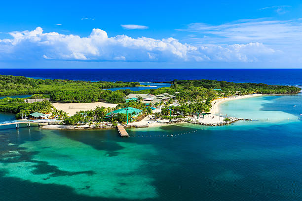
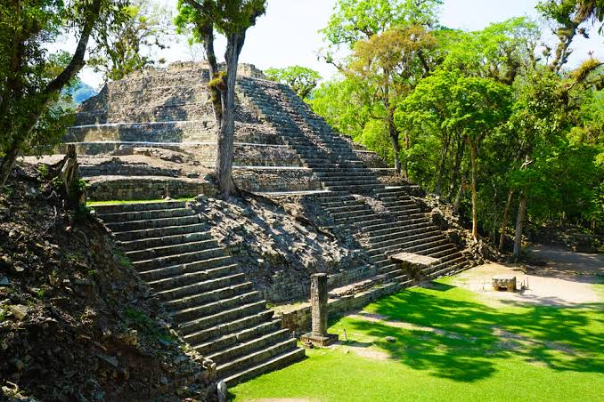

📍 Ubicación Geográfica
• Región: Se encuentra en el corazón de Istmo Centroamericano.
• Límites: Limita al norte con el mar Caribe, al sur con el golfo de Fonseca (océano Pacífico), El Salvador y Nicaragua, y al oeste con Guatemala.
• Ventaja turística: Cuenta con más de 800 kilómetros de costa caribeña, lo que le otorga una inmensa riqueza de playas e islas tropicales.
🦎 Biodiversidad
• Pulmón de la región: Más del 40% del territorio hondureño está cubierto por bosques, albergando más de 90 áreas protegidas y parques nacionales (como La Tigra, Celaque y la Biósfera de Río Plátano).
• Flora y Fauna: Es un país megadiverso con más de 700 especies de aves (destacando la Guacamaya Roja, Ave Nacional), felinos como el jaguar y el tigrillo, y miles de plantas tropicales y orquídeas.
• Tesoro Marino: Sus costas albergan un tramo masivo del Sistema Arrecifal Mesoamericano, la segunda barrera de coral más grande del mundo, vital para la vida marina en el Caribe.
🌤️ Clima
• Tipo: Predomina el clima tropical, caracterizado por temperaturas cálidas durante todo el año.
• Variaciones por región:
• Zonas Costeras: Clima caluroso y húmedo, ideal para el turismo de playa.
• Zonas Altas e Interiores: Clima templado y fresco (como en Tegucigalpa, los valles centrales y las áreas de bosque nublado).
• Estaciones: Se divide principalmente en dos épocas: la estación lluviosa (mayo a noviembre) y la estación seca (diciembre a abril).
💵 Moneda
• Moneda Oficial: El Lempira (HNL).
• Símbolo: Se representa con la letra L. (ejemplo: L. 100).
• Uso: Aunque en las zonas turísticas principales (como Roatán o Copán Ruinas) el dólar estadounidense es ampliamente aceptado, el Lempira es la moneda obligatoria para el comercio diario en todo el país.
Algunos destinos principales...
Parque Nacional La Tigra

El Parque Nacional La Tigra es el principal pulmón verde de Tegucigalpa y el primer parque nacional de Honduras. Este majestuoso bosque nublado, ubicado a solo unos kilómetros de la capital, es un refugio de biodiversidad y el destino perfecto para los amantes del ecoturismo y la aventura.
Caminar por La Tigra es adentrarse en un escenario mágico donde los árboles centenarios están cubiertos de musgo, helechos gigantes y bromelias, mientras una neblina mística envuelve el paisaje. El parque cuenta con una extensa red de senderos bien señalizados (como Principal, La Esperanza, Bosque Nublado o Jutiapa) que ofrecen desde caminatas relajantes hasta rutas exigentes, ideales para respirar el aire más puro del país.
Islas de la Bahía

Islas de la Bahía es el paraíso caribeño por excelencia de Honduras y uno de los destinos playeros más espectaculares del mundo. Este archipiélago, compuesto por las islas de Roatán, Utila y Guanaja, es mundialmente famoso por albergar la segunda barrera de coral más grande del planeta.
Sus playas de arena blanca y fina, bordeadas por aguas cristalinas de infinitos tonos turquesa, son el escenario ideal para el descanso y la aventura marina. Roatán destaca por sus lujosos resorts y la vibrante vida de West End; Utila es la capital mundial del buceo a bajo costo y el hogar del majestuoso tiburón ballena; mientras que Guanaja ofrece una experiencia virgen, exclusiva y rodeada de naturaleza intacta.
Las Ruinas de Copán

Las Ruinas de Copán, declaradas Patrimonio de la Humanidad por la UNESCO, son la joya arqueológica de Honduras y el centro cultural más importante de la civilización Maya. Ubicadas en el occidente del país, este antiguo centro cívico y ceremonial destaca por el nivel artístico y el detalle de sus esculturas de piedra, ganándose el título del "París del mundo maya".
Caminar por Copán es viajar en el tiempo a través de plazas ceremoniales, canchas de juego de pelota y espectaculares estelas que narran las dinastías de sus antiguos reyes. La mística del lugar se potencia con la selva tropical que rodea las estructuras, donde el canto de las guacamayas rojas acompaña cada paso de la exploración.